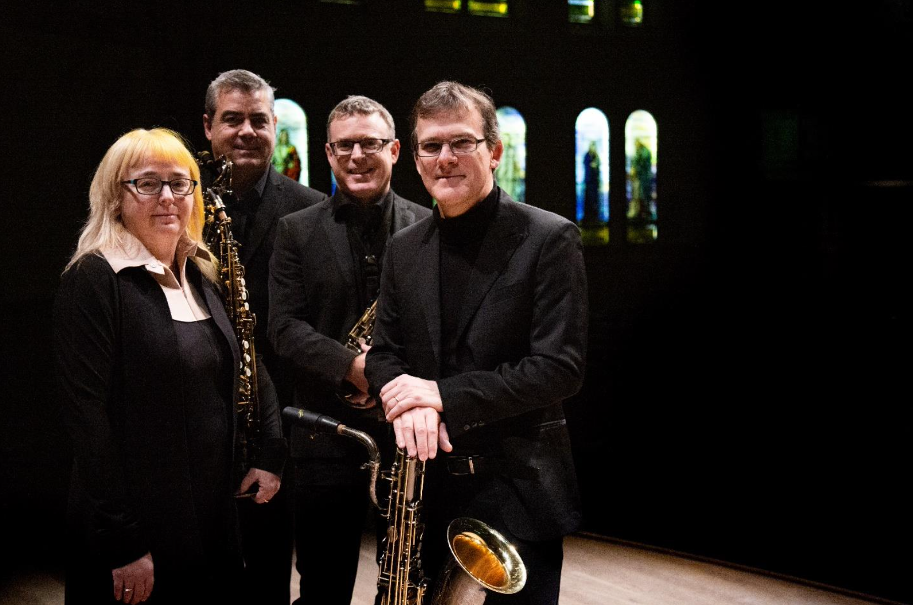
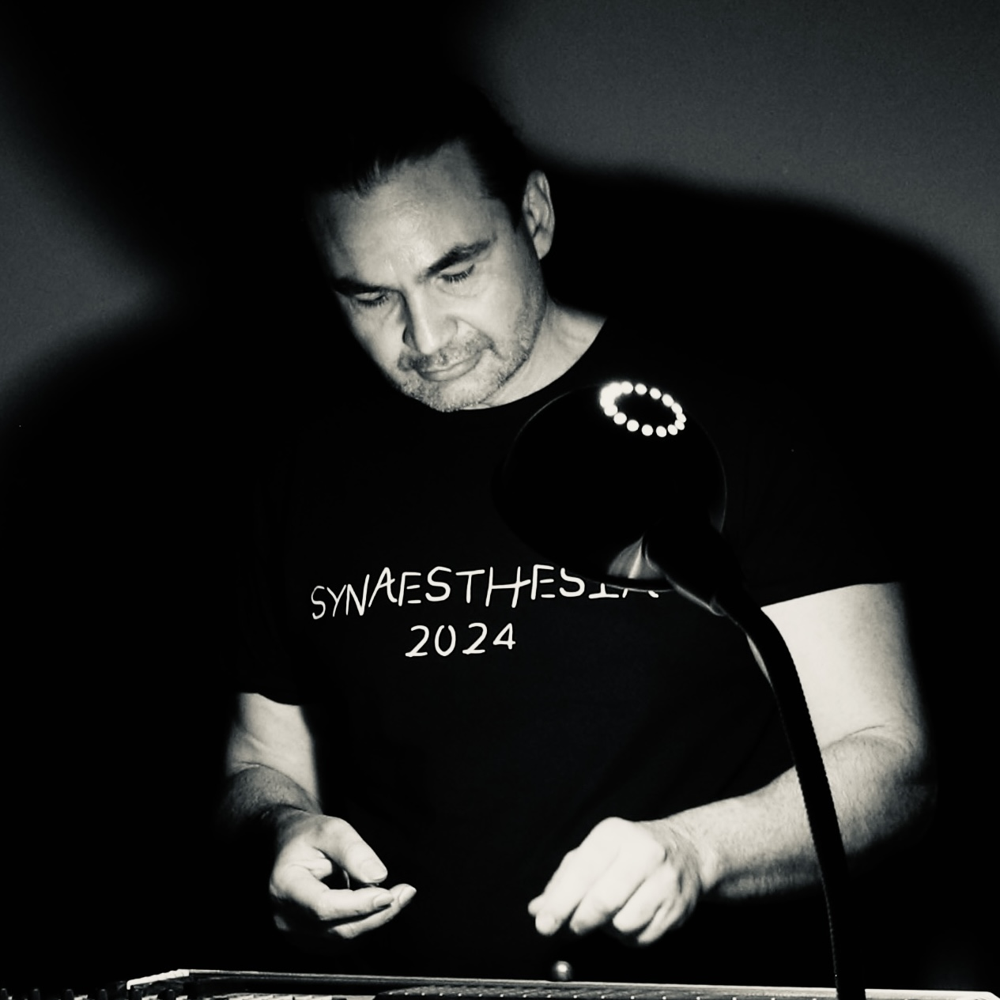

01 CONERT
23.08.2025
6 PM
ANTON
open stage
Chapel “St. George”
PROGRAM
Claude Vivier (1948-1983)
– Pulau Dewata (1977)
Mikhail Goleminov (1956-2022)h3>
– Androide” for saxophone quartet and electronics (2013)
Gordon Williamson (1974)
– „Breathing room” for saxophone quartet (2022)
Yassen Vodenitcharov (1964)
– Cinq pièces liquides for saxophone quartet and electro-acoustic device (2023)
Keisuke Yokota (1990)
– Watermelons and Apples for saxophone quartet (2024)
Mikhail Goleminov (1956-2022)
– „Coyote” for saxophone quartet and live electronics (1994)
Steve Reich (1933)
– New York Counterpoint (1985)
PARTICIPANTS

Saxophone Quartet "Quasar"
Marie-Chantal Leclair - artistic director, soprano saxophone
Mathieu Leclair - alto saxophone
André Leroux - tenor saxophone
Jean-Marc Bouchard - baritone saxophone
QUASAR SAXOPHONE QUARTET Known for their energy and bold innovation, the four members of Quasar have been exploring the innumerable facets of musical creation since the group's founding in 1994. The group's ventures include instrumental music, improvisation, and electronics. Whether solo or accompanied by a symphony orchestra, acoustic or plugged-in, Quasar offers its audience a unique and deeply original programming. The ensemble has been awarded 10 OPUS prizes by the Conseil québécois de la musique, including "Artist of the Year". Quasar presents a series of concerts each season in Montreal while performing extensively across Canada, Mexico, the United States and Europe. It has been invited to international festivals including: Busan Maru (South Korea), Ars Musica (Brussels), SALT Festival (Victoria), and Tonlagen (Dresden). Truly a driving force of musical creation, the quartet works closely with composers favouring research, experimentation and the proliferation of unprecedented ideas. Quasar's aims are to contribute to the enrichment of our musical heritage and to provide a platform for new music experimentation, exploration and production. The quartet has commissioned over 200 works over the course of its thirty years of activity. During that time, it has performed as a solo group with, among others, the Montreal Symphony Orchestra, the Winnipeg Symphony Orchestra and the Hanzhou Philharmonic Orchestra. In addition to being very involved in the creation of new works, Quasar also presents a very diversified repertoire ranging from classical music to jazz, allowing the group to fully demonstrate the saxophone's multiple facets. These concerts provide a stimulating and most interesting way of reaching out to the public. Member of Le Vivier, Quasar is supported by the Conseil des arts et des lettres du Québec, the Canada council for the Arts, the Conseil de Montréal and Vandoren.

Vladimir Vlaev, sound design
Vladimir Vlaev Is a composer, sonologist, performer, researcher, music producer, sound designer and educator based In Sofia, Bulgaria. He was awarded the national music award “Crystal Lyre” in the “Sound Design” category for his sound performance “Pervade the Space” in 2024. Several of Vlaev’s works have been recorded at the Bulgarian National Radio. His piece for ensemble “Towards Singularity” represented Bulgaria at the International Rostrum of Composer in 2018, and “Warning! … a chronicle of now…” in 2025. His teaching work is mainly focused on programming and sound design with Max/MSP and Max4Live, and also includes lectures on various aspects of electronic and experimental music. He conducts lectures, workshops and presentations at the Academy for Music, Dance and Fine Arts (Plovdiv), National Music Academy (Sofia), Institute of Sonology (The Hague), New Bulgarian University (Sofia), Resonator (Sofia).